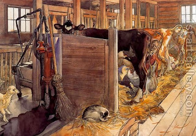

Bava Metzia 98 - Cow Half-Borrowed, Half-Rented
A man borrowed a cow for half a day and rented it for half a day, and the cow died. The lender claims, "It died while being borrowed," making the borrower liable, but the borrower says "I don't know" - the borrower is liable.
Can we disprove from here the following ruling of Rav Nachman? If one claims to another, "you owe me a maneh (100 zuz)" and the other one says, "I don't know if I owe you" - the defendant is NOT liable. But in the first ruling he is!
Rav Nachman will answer that the first ruling is talking about two cows, and about one of them the borrower agrees to his liability. This makes it a case of borrower admitting in part , so that he has to swear, but not knowing about the second claim, he can't swear and thus has to pay.